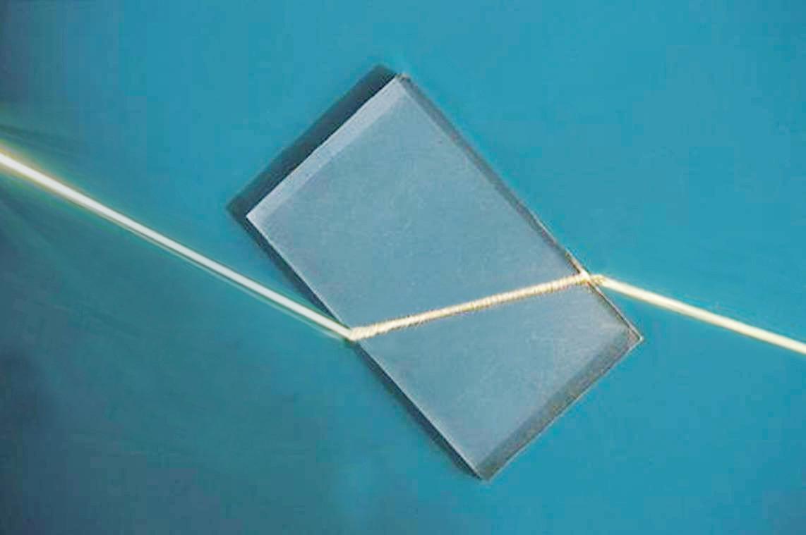

Figure 5.2: Light travelling from air to glass
Refraction of light by a glass prism
Glass prisms come in various types, including rectangular and triangular. Refraction occurs when light passes through the prism, bending at the interfaces due to changes in speed as it enters and exits the glass. When light enters the prism from air, it slows down and bends towards the normal line, which is perpendicular to the surface at the entry point. Conversely, as light exits the prism back into the air, it speeds up and bends away from the normal.
Refraction of light by a rectangular prism
When a light ray passes from air into a rectangular glass prism, it undergoes refraction at the point where it enters the glass. Inside the prism, the light travels in a straight line until it reaches the opposite boundary, where it is refracted again as it exits back into the air. Since the opposite sides of a rectangular glass prism are parallel, the emerging light ray continues in the same direction it had before entering the prism. As a result, there is no overall deviation in the path of the light. This behaviour is illustrated in Figure 5.3.

Figure 5.3: Light refraction by a rectangular glass block

Activity 5.2
Aim: To investigate the refraction of light as it passes from air to glass
Materials: transparent glass block, white piece of paper, a ray box
Procedure
- 1. Place a transparent glass block on a white piece of paper. Ensure that the block is fixed so that it does not move.
- 2. Place the ray box so that a ray of light falls on the side of the block at a small angle to the normal as shown in Figure 5.4. Draw a line tracing the beam of light and mark the point at which light enters the glass block as M.
- 3. Mark the point at which the ray of light emerges from the other side of the glass block as N and draw a line